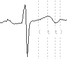
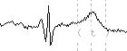

R. Jané1, A. Blasi1, J. García2, P. Laguna2
1Dep. ESAII, Centre de Recerca en Enginyeria Biomèdica, UPC, Barcelona, Spain.
2Dep. Ingeniería Electrónica y Comunicaciones, Centro Politécnico Superior. Univ. de Zaragoza, Spain
In this paper we evaluate a single-lead threshold based ECG wave boundaries detector with a QT database developed for validation purposes. We also identify its different sources of error distinguishing those that come from precision errors in boundary location from those that come from morphology misclassification. We obtain 71% of records with correct morphology identification of T wave and variance in boundary location within manual referees variance. The remaining records analyzed correspond to signals with poor SNR at the T wave, or morphology discrepancies between algorithm and experts.
Some cardiac clinical information can be determined by analyzing significant intervals in ECG signals, like QT, QRS, PQ and others considered of interest. However, it is necessary to have their positions within each beat well defined. Automatic methods offer a useful help adding extended and efficient diagnostic protocols in ECG signal processing equipment [1].
Nevertheless, ECG signals, as all biomedical signals, have several characteristics that can become sources of error for automatic detectors: noise contaminating the signals, non-stationary or not well defined waveform morphologies, absence of some waves (P or T waves do not always appear), ambiguity when defining where the wave boundaries should be marked (this can also be a problem for expert cardiologists), etc. All those difficulties are even more remarkable in Holter ECG recordings, due to the non-rest conditions of the patient.
The QT Database [2], also presented in this conference, was developed with the aim to be a reference when exhaustively validating ECG wave boundaries detectors. It contains 105 excerpts (each 15 minutes long) taken from ECG records manually annotated for ECG wave boundaries location. This will be a useful tool to evaluate the performance of the threshold based detector (TD) of waveform limits presented in [3, 6].This detector first locates each beat using a differentiated and low-pass filtered ECG signal as input. Next, the other wave boundaries are located. This detector was evaluated using the CSE database in [6].
Here another validation is carried out with enough reference beats to infer statistical conclusions. First of all we determine whether the detector gives precise and correct results. Another purpose of this work is to define which errors are more common in order to focus the detector’s improvements in the future.
In the QT database there are two channels recorded for each ECG signal. Both leads were presented at the same time to the referees, so they used whatever lead they considered more appropriate to determine the waveform boundaries. Since the TD is a single channel detector, we analyzed both signals separately. We compared both sets of annotations with the referees’ and we selected the file with annotations closer to the manual ones, which correspond to the channel with better SNR at the T wave (usually not because of high noise but because of small T wave signal energy). We can then consider that we truly evaluated the algorithm’s performance with the same signals considered to locate manual annotations.
We have classified all signals in several groups according to numerical and visual criteria. Automatic and manual annotations have been visualized simultaneously. In case of poor validation results, that is, high mean error, high standard deviation or both, the source of error has been identified and the record included in one of the groups described in section 3. Therefore, at the end of this analysis we had several groups of records, each one with different validation results and detection difficulties, according to their different and special characteristics.
The purpose of this database [2] is to have manually annotated samples of beats with which automatic algorithms for QT measurement and other significant points detection can be evaluated. The database has 105 fifteen-minute excerpts of two-channel digitized ECGs, and software to analyze them. The records were chosen to represent a wide variety of T wave morphologies, so that they would be useful to evaluate the performance of automatic methods when studying the ventricular repolarization interval. The records are chosen from among existing ECG databases: the Beth Israel Hospital (BIH), the European Society of Cardiology (ESC), and the MIT Databases (table 1). These records include also some patients that suffered a sudden death process, and subjects not previously diagnosed of any cardiac disturbance.
| SD | MSV | EST | MIT | LT | MST | N |
| 23% | 12% | 31% | 14% | 4% | 6% | 10% |
Table 1. Total percentages of records in the QTDB, where MIT is MIT-BIH Arrhythmia; EST is European ST-T; MSV is MIT-BIH Supraventricular Arrhythmia; LT is MIT-BIH Long Term ECG; MST is MIT-BIH ST Change; N is BIH Hospital Normal Subjects; SD is BIH Hospital Sudden Death Patients
For each one of its 105 records, a minimum of 30 beats have been manually annotated by one or more cardiologists at the BIH using the visualization software attached to the MIT/BIH database distribution CD/ROM. Those annotated beats in each record were chosen from minute 10 of the recording (to allow learning algorithms to set up). Then 30 consecutive beats were manually annotated to allow the study of short-term variations. When the QRS detector, used to position beats [4], identified more than one morphology type, subsets of 20 beats were also added to the selection. In this way, the variety of annotated morphologies was broadened.
For each annotated beat, there are the following manual annotations: the beginning, peak, and end of the P wave; the beginning and end of the QRS (QRS position was given by a QRS detector); the peak and the end of the T wave. In some cases, the beginning of the T wave is also marked, and, if present, U waves are also annotated.
To quantify the correctness and the precision of the TD detector’s performance we used parameters such as the mean error (me) and the standard deviation of this error (SD) [5]. The mean error is used to determine how close is the detector’s criterion to the referees’. The standard deviation gives an idea about the stability with which the detection criterion has been applied.
We considered the accepted standard deviation tolerances for several significant points (Table 2) from the measurements made by different experts [5]. Those measures will be the minimum values that could be requested to any automatic algorithm.
| Pon | Poff | QRSon | QRSoff | Tend | |
| saccepted | 10.2 | 12.7 | 6.5 | 11.6 | 30.6 |
Table 2. Accepted tolerances for referee deviations (in ms)
In order to classify the signals in groups by the correctness of T-wave boundaries location, we used the results of the detector’s validation, that is, we used the results of the values given by the detector of mean error and standard deviation for the end of T-wave.
Each group has the following characteristics:
Examples of signals belonging to the different groups are shown in the figure 1, where the same beat has manual (A) and automatic (B) annotations.
| A | B | |
| Group 1 | ||
|  | Group 2 | |
|  | Group 3 | |
| Group 4 |
Figure 1. Examples of signals included in the different groups. Left signals have manual annotations (A), and right signals the ones obtained by the automatic TD (B).
We also used two additional parameters in the detector’s validation [7]: the percentages of misdetections for each significant point defined as Sensitivity (S) and Positive Predictivity (P):
where n are the right detections, f(+) is the number of automatic annotations that are not registered in the set of manual annotation file; f(-) is the number of manual annotations that are not registered in the automatic annotation file. All these values refer only to the set of annotated beats at the database.
The single-lead TD detector has been applied to each signal of every record. Thus, two sets of annotations were available for each record at the end of the detection phase. Since the experts analyzed both signals at the same time, in many records it is not clear which lead was used to locate wave boundaries for the majority of beats.
We analyze first annotations from channel 0, and when evaluation results in a record were disappointing with this channel’s annotations, results in channel 1 were studied. In some cases this second set of results was clearly better, because of better distinction of wave boundaries than in the other channel. By using the second set of annotations we are closer to the expert’s analysis, corroborating the hypothesis that the expert has always used the channel with better visual T wave identification.
To go further in the study and identify where the detector failed and why, we decided to classify all records in the four groups described in section 3. The results obtained then are shown and commented in section 4.2.
We have compared the performance of the TD detector with the manual analysis of the signals carried out by expert cardiologists. The results we have obtained for all the available records in the QT database are in Table 3.
| Beats | me | SD | SD* | S (%) | P (%) | |
| Pon | 2596 | 10.26 | 14.08 | 10.2 | 96.18 | 99.16 |
| P | 2626 | -0.48 | 10.96 | 97.01 | 99.47 | |
| Pend | 2627 | -5.73 | 13.57 | 12.7 | 97.01 | 99.47 |
| QRSon | 3130 | -7.82 | 10.86 | 6.5 | 99.88 | 99.97 |
| R | 3130 | -9.32 | 4.41 | 99.88 | 99.97 | |
| QRSend | 3130 | -3.64 | 10.74 | 11.6 | 99.88 | 99.97 |
| Ton | 1241 | 16.0 | 29.82 | 98.00 | 98.70 | |
| T | 2932 | 23.26 | 28.26 | 98.80 | 99.78 | |
| Tend | 2996 | 18.68 | 29.79 | 30.6 | 98.92 | 99.91 |
Table 3. Evaluation results, comparing the automatic waveform boundaries detection with manual annotations. Mean and standard deviation measurements are in milliseconds.
The last two columns of this table show the high percentages of both Sensitivity and Positive Predictivity for each significant point. This means that misdetection errors are remarkably low.
The large number of annotations used in this study (see first column of Table 3), allow us to infer statistical conclusions about the detector. To do so, we have also included in this table the accepted tolerances for referee deviations (SD*), shown in Table 2. From Table 3 we can already conclude that the algorithm’s deviation for all wave boundaries is comparable to experts annotations (note that the sampling period in the database is 4 ms). However, there is still a large systematic shift in T wave location that we will analyze more in detail in the next section.
In this second part of the study, we intend to identify in which signals the detector fails, and how we know that it fails. To do so we have classified the signals in the four groups described in section 3. This classification was carried out using the validation results obtained for the end of the T wave together with the visualization of each signal and its manual and automatic sets of annotations.
Results of the analysis after this final classification can be seen in tables 4, 5 and 6. Since this classification was done according to the evaluation results for the end of the T wave, the most significant results are those in Table 6.
| Patients | beats | me | SD | S (%) | P (%) | |
| group 1 | 29 | 847 | 7.5 | 22.52 | 98.66 | 98.56 |
| group 2 | 7 | 197 | 59.51 | 41.58 | 94.59 | 100 |
| group 3 | 4 | 93 | 24.73 | 62.5 | 89.21 | 100 |
| group 4 | 5 | 134 | 0.86 | 35.17 | 97.66 | 96.47 |
Table 4. Beginning of T-wave results.
| Patients | beats | me | SD | S (%) | P (%) | |
| group 1 | 72 | 2128 | 4.76 | 15.15 | 99.78 | 99.91 |
| group 2 | 12 | 342 | 60.97 | 17.25 | 96.88 | 100 |
| group 3 | 7 | 197 | 34.38 | 89.54 | 94.91 | 100 |
| group 4 | 10 | 291 | 99.37 | 69.41 | 97.34 | 98.43 |
Table 5. Peak of T-wave results.
| Patients | beats | me | SD | S (%) | P (%) | |
| group 1 | 73 | 2163 | -0.63 | 19.27 | 99.7 | 99.87 |
| group 2 | 12 | 342 | 70.86 | 21.11 | 96.88 | 100 |
| group 3 | 7 | 196 | 19.96 | 69.41 | 94.39 | 100 |
| group 4 | 10 | 296 | 102.3 | 88.11 | 98.92 | 100 |
Table 6. End of T-wave results.
Nevertheless, results obtained for the beginning and peak of the T wave are similar to those for the end of this wave (Table 6).
Signal classification was carried out without paying attention to which database the signals came from.
The percentages of records belonging to each database are represented in Table 7. Most records classified in groups 3 and 4 (poor detection results due to low SNR or small T amplitude) come from the Sudden Death Database (SD) and the MIT-BIH Supraventricular Database. On the other hand, most records classified in group 2 (with systematic morphology recognition errors) come from the European ST-T Database and the Sudden Death Database.
The detector’s poor performance with the signals coming from the SD was expected beforehand because of the very poor SNR in those signals due to non-homogeneous repolarization. This makes T waves poorly marked and susceptible of large error discrepancies between manual and automatic measurements.
Records from the MIT-BIH ST Change Database (MST) and from the Normal Subjects Database (N) are all in group 1 (with no detection errors).
| SD | MSV | EST | MIT | LT | MST | N | |
| Group 1 | 15% | 12% | 33% | 15% | 3% | 8% | 14% |
| Group 2 | 25% | - | 50% | 17% | 8% | - | - |
| Group 3 | 43% | 29% | 14% | 14% | - | - | - |
| Group 4 | 50% | 20% | 20% | 10% | - | - | - |
Table 7. Percentages of records from each database present in each group.
We have validated the threshold technique for automatic ECG wave boundaries detection. This validation has been done with more than 2500 beats from 104 different records. From the first part of our study we can conclude that, with a significant set of annotated beats, evaluation results showed that the variability of the mean error committed is comparable to the deviation within inter expert deviation measures, showing the TD performance in detecting significant points in ECG signals is comparable to experts.
In the second part of our study we have observed that values of mean error and standard deviation can give information about some of the detector’s errors. Using this information we have that, for the end of T wave (the main source of classifying signals) over 71% of the records had a well performed automatic wave boundaries detection. The most common error was the one involving wrong morphology identification leading to systematic wrong location of the T wave (basically in records from the European ST-T Database with 50% of records included in this group). It was identified for its high mean (big discrepancy with the referee’s detection criterion), and its low standard deviation (difference values between manual and automatic annotations had small variability).
Finally, we can state that most of the records (over 71% of them) were included in group 1, with mean and standard deviation with reasonable values, thatis, well detected records. In groups 2, 3 and 4 there is a large percentage of records coming mainly from three databases: the Sudden Death Database, the European ST-T Database and the Supraventricular Database. This is due to the characteristics of the ECG signals recorded from those specific patients, who suffer from different heart diseases which cause distortions in ECG signals, more clear at the repolarization phase.
In summary, we can conclude that for a single-lead wave boundaries detection, the TD method is robust enough to give measures comparable to those given by experts. When the SNR of T wave decreases, the error probability is higher. This problem can be reduced by selecting the lead which the doctor considers more appropriate to measure QT. Also Holters with more than two leads (the QT database has only two) will allow more possibilities for measuring and even studying the lead variability of the interval duration.
This work was supported in part by grant TIC94-0608-C02, from CICYT, Spain.
[1] Laguna P., Caminal P., Jané R., Automatic QT Interval Analysis in Post-Myocardial Infarction Patients. Journal of Ambulatory Monitoring 1991, 4, no. 2, 93-111.
[2] Laguna P. R. G. Mark, Goldberger A., Moody G. B., A database for evaluation of algorithms for measurement of QT and other waveform intervals in the ECG. Computers in Cardiology 1997. (This issue)
[3] Laguna P., Thakor N. V., Caminal P., Jané R., Yoon H. R., New Algorithm for QT interval Analysis in 24-hour Holter ECG: performance and applications. Medical & Biological Engineering & Computing 1990, 28, 67-73.
[4] Moody G. B., Mark R. G., Development and Evaluation of a 2-lead ECG Analysis Program. Computers in Cardiology, 1982, 39-44.
[5] Zywietz C., Celikag D., Testing Results and Derivation of Minimum Performance criteria for Computerized ECG-Analysis. Computers in Cardiology 1991, 97-100.
[6] Laguna P., Jané R., Caminal P., Automatic Detection of Wave Boundaries in Multilead ECG Signals: Validation with the CSE Database. Computers and Biomedical Research, 1994, 27: 45-60.
[7] Moody G. B., ECG Database Applications Guide. Harvard University - Massachusetts Institute of Technology, Division of Health Sciences and Technology. July 1992, bxb program, 3-4.
Address for correspondence: